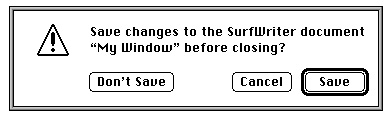
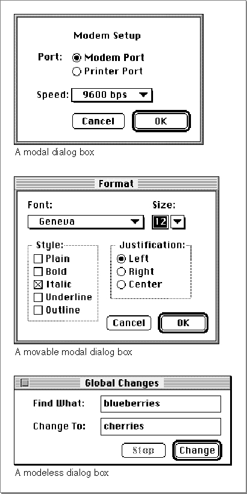

Alert Boxes and Dialog Boxes
In addition to standard windows, your application typically also uses alert boxes and dialog boxes. An alert box is a window that your application displays on the screen to warn the user or to report an error to the user. An alert box typically consists of text describing the situation and buttons for the user to acknowledge or rectify the problem. Figure 1-4 shows an alert box that the SurfWriter application displays when the user attempts to close a window without saving the document. The alert box gives the user a chance to save the document before the SurfWriter application closes the window; this prevents the user from accidentally losing data.
A dialog box is a window that you can use for the specific purpose of soliciting additional information from the user. The Dialog Manager provides routines to help you display dialog boxes and provides standard and consistent methods of interacting with the user. Dialog boxes can contain editable text items, informative or instructional text, and controls such as buttons and checkboxes. You can create modal, movable modal, or modeless dialog boxes. Figure 1-5 shows an example of each type of dialog box.
A modal dialog box is a dialog box that puts the user in the state or "mode" of being able to work only inside the dialog box. A modal dialog box is similar in appearance to an alert box, except that a modal dialog box can contain editable text items and additional
Figure 1-5 Modal, movable modal, and modeless dialog boxes

controls, such as radio buttons and pop-up menus. The user cannot move a modal dialog box, and the user can dismiss a modal dialog box only by clicking its buttons. You should use a modal dialog box only when it's essential for the user to complete an operation before performing any other work.
A movable modal dialog box is a modal dialog box with a title bar (but no close box) that allows the user to move the dialog box. The user can dismiss the dialog box only by clicking its buttons; however, when you use movable modal dialog boxes, you should allow the user to switch to another application if the user clicks in the window of another application or chooses another application from the Apple or Application menu. Use a movable modal dialog box when the user might need to move the dialog box to view other areas of the screen or when the user can switch to another application without affecting the state of your application.
A modeless dialog box is a dialog box that looks like a document window without a size box or scroll bars. A modeless dialog box does not require the user to respond before doing anything else. The user can move a modeless dialog box, move between a modeless dialog box and other windows, and close a modeless dialog box just like a document window. Whenever possible, use a modeless dialog box instead of a movable modal or modal dialog box. Use a modeless dialog box when the user can perform other operations--such as working in document windows--without dismissing the modeless dialog box.
The chapter "Dialog Manager" in this book describes in detail how you can create alert boxes and dialog boxes for your application.